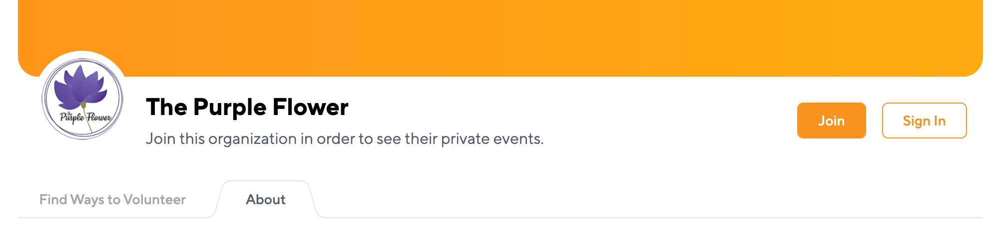

We're honored to have so many community members interested in helping out.
Due to the nature of our services, some volunteer opportunities require additional screening and onboarding. Whatever level of involvement you're interested in, once you begin the application process, you'll be the first to hear as soon as we have volunteer opportunties that match your preferences and availability.
We regularly need help assembling "go-bags" with donated and purchased supplies (from our Amazon Wish List) as well as tabling events and supporting our fundraising efforts. Once you're approved as a Community Volunteer, you will be eligible to accept regular open-calls for volunteer opportunities.
We could use help with 1-on-1 specialty services like Translation, Emergency Transport, Legal Services, Client Advocacy, and administrative tasks requring training. If you'd like to be considered for such specialty volunteer services, please submit this interest form and as opportunities and trainings arise, we'll be in touch.
To volunteer as a Client Advocate, you must first apply and be onboarded as a Community Level Volunteer. This level of engagement requires additional background checks, vetting, and a 40-hour training program. As soon as another training opens up, we'll post it here and share with all active Community Volunteers.
Signing up as a Community Volunteer allows you to join us for events where we need vetted help for making "go-bags" for clients, tabling events, supporting our fundraising efforts, and other activities that don't require advanced training or screening.
We've joined several non-profits in Carroll County in launching our Volunteer Program on The Point app, giving community members an easy way to access all volunteer opportunities in our area.
Due to our limited staffing and the high demand for our services, we haven't historically been able to keep up with the interest of volunteers. We appreciate that you may not want to join another app, and we also appreciate your understanding and willingness to try something new in the interest of volunteering.
To get started, go to The Purple Flower on The Point and click "Join Us" (see screenshot). This will prompt you to create an account (or login) and will then add you to our organization. You may not see any immediate events, but rest assured that we will be notified of your interest and as we coordinate new opportunities to get involved, you will hear from us.
